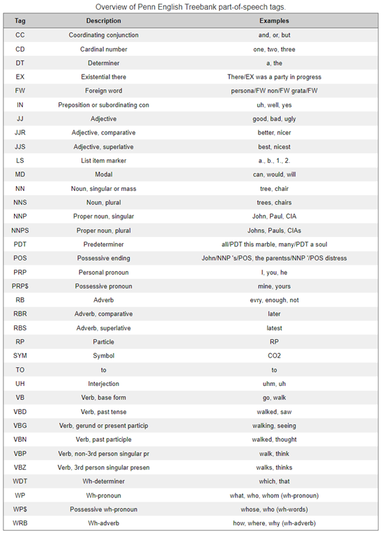
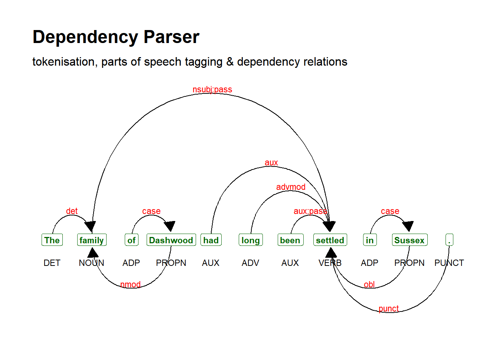

6.2 janeaustenr
6.2.2 Look into data
And we can get the top 60 rows from “sensesensibility”
## [1] "SENSE AND SENSIBILITY"
## [2] ""
## [3] "by Jane Austen"
## [4] ""
## [5] "(1811)"
## [6] ""
## [7] ""
## [8] ""
## [9] ""
## [10] "CHAPTER 1"
## [11] ""
## [12] ""
## [13] "The family of Dashwood had long been settled in Sussex. Their estate"
## [14] "was large, and their residence was at Norland Park, in the centre of"
## [15] "their property, where, for many generations, they had lived in so"
## [16] "respectable a manner as to engage the general good opinion of their"
## [17] "surrounding acquaintance. The late owner of this estate was a single"
## [18] "man, who lived to a very advanced age, and who for many years of his"
## [19] "life, had a constant companion and housekeeper in his sister. But her"
## [20] "death, which happened ten years before his own, produced a great"
## [21] "alteration in his home; for to supply her loss, he invited and received"
## [22] "into his house the family of his nephew Mr. Henry Dashwood, the legal"
## [23] "inheritor of the Norland estate, and the person to whom he intended to"
## [24] "bequeath it. In the society of his nephew and niece, and their"
## [25] "children, the old Gentleman's days were comfortably spent. His"
## [26] "attachment to them all increased. The constant attention of Mr. and"
## [27] "Mrs. Henry Dashwood to his wishes, which proceeded not merely from"
## [28] "interest, but from goodness of heart, gave him every degree of solid"
## [29] "comfort which his age could receive; and the cheerfulness of the"
## [30] "children added a relish to his existence."
## [31] ""
## [32] "By a former marriage, Mr. Henry Dashwood had one son: by his present"
## [33] "lady, three daughters. The son, a steady respectable young man, was"
## [34] "amply provided for by the fortune of his mother, which had been large,"
## [35] "and half of which devolved on him on his coming of age. By his own"
## [36] "marriage, likewise, which happened soon afterwards, he added to his"
## [37] "wealth. To him therefore the succession to the Norland estate was not"
## [38] "so really important as to his sisters; for their fortune, independent"
## [39] "of what might arise to them from their father's inheriting that"
## [40] "property, could be but small. Their mother had nothing, and their"
## [41] "father only seven thousand pounds in his own disposal; for the"
## [42] "remaining moiety of his first wife's fortune was also secured to her"
## [43] "child, and he had only a life-interest in it."
## [44] ""
## [45] "The old gentleman died: his will was read, and like almost every other"
## [46] "will, gave as much disappointment as pleasure. He was neither so"
## [47] "unjust, nor so ungrateful, as to leave his estate from his nephew;--but"
## [48] "he left it to him on such terms as destroyed half the value of the"
## [49] "bequest. Mr. Dashwood had wished for it more for the sake of his wife"
## [50] "and daughters than for himself or his son;--but to his son, and his"
## [51] "son's son, a child of four years old, it was secured, in such a way, as"
## [52] "to leave to himself no power of providing for those who were most dear"
## [53] "to him, and who most needed a provision by any charge on the estate, or"
## [54] "by any sale of its valuable woods. The whole was tied up for the"
## [55] "benefit of this child, who, in occasional visits with his father and"
## [56] "mother at Norland, had so far gained on the affections of his uncle, by"
## [57] "such attractions as are by no means unusual in children of two or three"
## [58] "years old; an imperfect articulation, an earnest desire of having his"
## [59] "own way, many cunning tricks, and a great deal of noise, as to outweigh"
## [60] "all the value of all the attention which, for years, he had received"6.2.3 Transform to a dataframe
sensesensibility_DF <- sensesensibility %>%
data.frame()
sensesensibility_DF <- sensesensibility_DF[-c(1:12),]
sensesensibility_DF %>%
head(60)## [1] "The family of Dashwood had long been settled in Sussex. Their estate"
## [2] "was large, and their residence was at Norland Park, in the centre of"
## [3] "their property, where, for many generations, they had lived in so"
## [4] "respectable a manner as to engage the general good opinion of their"
## [5] "surrounding acquaintance. The late owner of this estate was a single"
## [6] "man, who lived to a very advanced age, and who for many years of his"
## [7] "life, had a constant companion and housekeeper in his sister. But her"
## [8] "death, which happened ten years before his own, produced a great"
## [9] "alteration in his home; for to supply her loss, he invited and received"
## [10] "into his house the family of his nephew Mr. Henry Dashwood, the legal"
## [11] "inheritor of the Norland estate, and the person to whom he intended to"
## [12] "bequeath it. In the society of his nephew and niece, and their"
## [13] "children, the old Gentleman's days were comfortably spent. His"
## [14] "attachment to them all increased. The constant attention of Mr. and"
## [15] "Mrs. Henry Dashwood to his wishes, which proceeded not merely from"
## [16] "interest, but from goodness of heart, gave him every degree of solid"
## [17] "comfort which his age could receive; and the cheerfulness of the"
## [18] "children added a relish to his existence."
## [19] ""
## [20] "By a former marriage, Mr. Henry Dashwood had one son: by his present"
## [21] "lady, three daughters. The son, a steady respectable young man, was"
## [22] "amply provided for by the fortune of his mother, which had been large,"
## [23] "and half of which devolved on him on his coming of age. By his own"
## [24] "marriage, likewise, which happened soon afterwards, he added to his"
## [25] "wealth. To him therefore the succession to the Norland estate was not"
## [26] "so really important as to his sisters; for their fortune, independent"
## [27] "of what might arise to them from their father's inheriting that"
## [28] "property, could be but small. Their mother had nothing, and their"
## [29] "father only seven thousand pounds in his own disposal; for the"
## [30] "remaining moiety of his first wife's fortune was also secured to her"
## [31] "child, and he had only a life-interest in it."
## [32] ""
## [33] "The old gentleman died: his will was read, and like almost every other"
## [34] "will, gave as much disappointment as pleasure. He was neither so"
## [35] "unjust, nor so ungrateful, as to leave his estate from his nephew;--but"
## [36] "he left it to him on such terms as destroyed half the value of the"
## [37] "bequest. Mr. Dashwood had wished for it more for the sake of his wife"
## [38] "and daughters than for himself or his son;--but to his son, and his"
## [39] "son's son, a child of four years old, it was secured, in such a way, as"
## [40] "to leave to himself no power of providing for those who were most dear"
## [41] "to him, and who most needed a provision by any charge on the estate, or"
## [42] "by any sale of its valuable woods. The whole was tied up for the"
## [43] "benefit of this child, who, in occasional visits with his father and"
## [44] "mother at Norland, had so far gained on the affections of his uncle, by"
## [45] "such attractions as are by no means unusual in children of two or three"
## [46] "years old; an imperfect articulation, an earnest desire of having his"
## [47] "own way, many cunning tricks, and a great deal of noise, as to outweigh"
## [48] "all the value of all the attention which, for years, he had received"
## [49] "from his niece and her daughters. He meant not to be unkind, however,"
## [50] "and, as a mark of his affection for the three girls, he left them a"
## [51] "thousand pounds a-piece."
## [52] ""
## [53] "Mr. Dashwood's disappointment was, at first, severe; but his temper was"
## [54] "cheerful and sanguine; and he might reasonably hope to live many years,"
## [55] "and by living economically, lay by a considerable sum from the produce"
## [56] "of an estate already large, and capable of almost immediate"
## [57] "improvement. But the fortune, which had been so tardy in coming, was"
## [58] "his only one twelvemonth. He survived his uncle no longer; and ten"
## [59] "thousand pounds, including the late legacies, was all that remained for"
## [60] "his widow and daughters."6.2.4 Create a corpus
## Corpus consisting of 12,612 documents.
## text1 :
## "The family of Dashwood had long been settled in Sussex. The..."
##
## text2 :
## "was large, and their residence was at Norland Park, in the c..."
##
## text3 :
## "their property, where, for many generations, they had lived ..."
##
## text4 :
## "respectable a manner as to engage the general good opinion o..."
##
## text5 :
## "surrounding acquaintance. The late owner of this estate was..."
##
## text6 :
## "man, who lived to a very advanced age, and who for many year..."
##
## [ reached max_ndoc ... 12,606 more documents ]Given that we have many empty lines in this corpus, we clean it by excluding any empty line.
sensesensibility_corpus <- corpus_subset(sensesensibility_corpus, ntoken(sensesensibility_corpus) >= 1)6.2.5 Advanced manipulations
6.2.5.1 Tokens
tokens() segments texts in a corpus into tokens (words or sentences) by word boundaries.
We can remove punctuations or not
6.2.5.1.1 With punctuations
## Tokens consisting of 10,592 documents.
## text1 :
## [1] "The" "family" "of" "Dashwood" "had" "long"
## [7] "been" "settled" "in" "Sussex" "." "Their"
## [ ... and 1 more ]
##
## text2 :
## [1] "was" "large" "," "and" "their" "residence"
## [7] "was" "at" "Norland" "Park" "," "in"
## [ ... and 3 more ]
##
## text3 :
## [1] "their" "property" "," "where" ","
## [6] "for" "many" "generations" "," "they"
## [11] "had" "lived"
## [ ... and 2 more ]
##
## text4 :
## [1] "respectable" "a" "manner" "as" "to"
## [6] "engage" "the" "general" "good" "opinion"
## [11] "of" "their"
##
## text5 :
## [1] "surrounding" "acquaintance" "." "The" "late"
## [6] "owner" "of" "this" "estate" "was"
## [11] "a" "single"
##
## text6 :
## [1] "man" "," "who" "lived" "to" "a"
## [7] "very" "advanced" "age" "," "and" "who"
## [ ... and 5 more ]
##
## [ reached max_ndoc ... 10,586 more documents ]6.2.5.1.2 Without punctuations
sensesensibility_corpus_tok_no_punct <- tokens(sensesensibility_corpus, remove_punct = TRUE)
sensesensibility_corpus_tok_no_punct## Tokens consisting of 10,592 documents.
## text1 :
## [1] "The" "family" "of" "Dashwood" "had" "long"
## [7] "been" "settled" "in" "Sussex" "Their" "estate"
##
## text2 :
## [1] "was" "large" "and" "their" "residence" "was"
## [7] "at" "Norland" "Park" "in" "the" "centre"
## [ ... and 1 more ]
##
## text3 :
## [1] "their" "property" "where" "for" "many"
## [6] "generations" "they" "had" "lived" "in"
## [11] "so"
##
## text4 :
## [1] "respectable" "a" "manner" "as" "to"
## [6] "engage" "the" "general" "good" "opinion"
## [11] "of" "their"
##
## text5 :
## [1] "surrounding" "acquaintance" "The" "late" "owner"
## [6] "of" "this" "estate" "was" "a"
## [11] "single"
##
## text6 :
## [1] "man" "who" "lived" "to" "a" "very"
## [7] "advanced" "age" "and" "who" "for" "many"
## [ ... and 3 more ]
##
## [ reached max_ndoc ... 10,586 more documents ]6.2.5.2 Compound words
Compound words are multi-word expressions that are relevant for our analysis.
We already found these based the kwic function
6.2.5.2.1 kwic Phrase
sensesensibility_corpus_tok_no_punct_phrase <- kwic(sensesensibility_corpus_tok_no_punct, pattern = phrase("the house"), window = 6)
head(sensesensibility_corpus_tok_no_punct_phrase, 10)## Keyword-in-context with 10 matches.
## [text97, 4:5] right to come | the house |
## [text110, 9:10] the latter she would have quitted | the house |
## [text430, 8:9] had been staying several weeks in | the house |
## [text674, 4:5] dwelling and though | the house |
## [text677, 7:8] her after giving the particulars of | the house |
## [text703, 8:9] mother's intention of removing into Devonshire | The house |
## [text757, 4:5] Mrs Dashwood took | the house |
## [text773, 3:4] to prepare | the house |
## [text776, 9:10] undoubtingly on Sir John's description of | the house |
## [text802, 3:4] alone before | the house |
##
## was her husband's from the moment
## for ever had
## before he engaged
## he now offered her was merely
## and garden to come with
## too as
## for a twelvemonth it was ready
## for their mistress's arrival for as
## as to
## on the last evening of their6.2.5.2.2 Compounds
However, these are computed as individual words not compound words. To do so, we can use the following code. As you see the phrase we were interested in is now added as compound words
sensesensibility_corpus_tok_no_punct_comp <- tokens_compound(sensesensibility_corpus_tok_no_punct, pattern = phrase("the house"))
sensesensibility_corpus_tok_no_punct_comp_kwic <- kwic(sensesensibility_corpus_tok_no_punct_comp, pattern = phrase("the_house"))
head(sensesensibility_corpus_tok_no_punct_comp_kwic, 10)## Keyword-in-context with 10 matches.
## [text97, 4] right to come | the_house |
## [text110, 9] latter she would have quitted | the_house |
## [text430, 8] been staying several weeks in | the_house |
## [text674, 4] dwelling and though | the_house |
## [text677, 7] after giving the particulars of | the_house |
## [text703, 8] intention of removing into Devonshire | The_house |
## [text757, 4] Mrs Dashwood took | the_house |
## [text773, 3] to prepare | the_house |
## [text776, 9] on Sir John's description of | the_house |
## [text802, 3] alone before | the_house |
##
## was her husband's from the
## for ever had
## before he engaged
## he now offered her was
## and garden to come with
## too as
## for a twelvemonth it was
## for their mistress's arrival for
## as to
## on the last evening of6.2.5.3 N-grams
N-grams are a subfamily of compound words. They can be named as “bi-grams”, “tri-grams”, etc. N-grams yield a sequence of tokens from already tokenised text object.
6.2.5.3.1 Multi-grams
The code below allows to obtain the sequences of consecutive compound words, with 2, 3 or 4 compound words.
sensesensibility_corpus_tok_no_punct_ngram <- tokens_ngrams(sensesensibility_corpus_tok_no_punct, n = 2:4) %>%
unlist() %>%
tolower() %>%
table()
## Top 10 rows
head(sensesensibility_corpus_tok_no_punct_ngram, 10)## .
## 1_ends 200_l 200_l_per
## 1 1 1
## 200_l_per_annum 7000l_would 7000l_would_support
## 1 1 1
## 7000l_would_support_her a-day_i a-day_i_shall
## 1 1 1
## a-piece_and
## 1## .
## youthful_infatuation_of_nineteen zeal_in
## 1 1
## zeal_in_the zeal_in_the_cause
## 1 1
## zeal_with zealous_attention
## 1 1
## zealous_attention_as zealous_attention_as_to
## 1 1
## zealously_active zealously_active_as
## 1 16.2.5.3.2 Skip-grams
Skip-grams allow to obtain non consecutive n-grams
sensesensibility_corpus_tok_no_punct_ngram_skip <- tokens_ngrams(sensesensibility_corpus_tok_no_punct, n = 2:4, skip = 1:2) %>%
unlist() %>%
tolower() %>%
table()
## Top 10 rows
head(sensesensibility_corpus_tok_no_punct_ngram_skip, 10)## .
## 200_annum 200_annum_it
## 1 1
## 200_annum_it_capable 200_annum_it_certainly
## 1 1
## 200_annum_though 200_annum_though_certainly
## 1 1
## 200_annum_though_is 200_per
## 1 1
## 200_per_and 200_per_and_is
## 1 1## .
## zealous_as_what_and zealous_as_what_was zealous_to zealous_to_he
## 1 1 1 1
## zealous_to_he_and zealous_to_he_what zealous_to_what zealous_to_what_and
## 1 1 1 1
## zealous_to_what_was zealously_as
## 1 16.2.5.4 Dictionary
If you have a dictionary with various words that fall within a generic word (e.g., variants of pronunciation of a word), then you can look these up. Here, we will create a dictionary that we populate ourselves and we show how to use it to search for items
6.2.5.4.1 Create dictionary
dict_sensesensibility <- dictionary(list(large = c("large", "big"),
property = c("property", "house"),
good = c("good", "great")))
print(dict_sensesensibility)## Dictionary object with 3 key entries.
## - [large]:
## - large, big
## - [property]:
## - property, house
## - [good]:
## - good, great6.2.5.4.2 Token lookup
sensesensibility_corpus_tok_no_punct_dict_toks <- tokens_lookup(sensesensibility_corpus_tok_no_punct, dictionary = dict_sensesensibility)
print(sensesensibility_corpus_tok_no_punct_dict_toks)## Tokens consisting of 10,592 documents.
## text1 :
## character(0)
##
## text2 :
## [1] "large"
##
## text3 :
## [1] "property"
##
## text4 :
## [1] "good"
##
## text5 :
## character(0)
##
## text6 :
## character(0)
##
## [ reached max_ndoc ... 10,586 more documents ]6.2.5.5 Part of Speech tagging
This section borrows many features from here. Part-of-Speech tagging (or PoS-Tagging) is used to distinguish different part of speech, e.g., the sentence: “Jane likes the girl” can be tagged as “Jane/NNP likes/VBZ the/DT girl/NN”, where NNP = proper noun (singular), VBZ = 3rd person singular present tense verb, DT = determiner, and NN = noun (singular or mass). We will use the udpipe package

6.2.5.5.1 Download and load language model
Before using the PoS-tagger, we need to download a language model.
As you can see from typing ?udpipe_download_model, there are 65 languages trained on 101 treebanks from here
file_to_check <- "models/english-ewt-ud-2.5-191206.udpipe"
if (file.exists(file = file_to_check)){
m_english <- udpipe_load_model(file = "models/english-ewt-ud-2.5-191206.udpipe")
}else{
m_english <- udpipe_download_model(model_dir = "models/", language = "english-ewt")
m_english <- udpipe_load_model(file = "models/english-ewt-ud-2.5-191206.udpipe")
}6.2.5.5.2 Tokenise, tag, dependency parsing
sensesensibility_corpus_tok_no_punct_anndf <- udpipe_annotate(m_english, x = sensesensibility_corpus_tok_no_punct[[1]]) %>%
as.data.frame()
## inspect
head(sensesensibility_corpus_tok_no_punct_anndf, 10)## doc_id paragraph_id sentence_id sentence token_id token lemma upos
## 1 doc1 1 1 The 1 The the DET
## 2 doc2 1 1 family 1 family family NOUN
## 3 doc3 1 1 of 1 of of ADP
## 4 doc4 1 1 Dashwood 1 Dashwood Dashwood PROPN
## 5 doc5 1 1 had 1 had have AUX
## 6 doc6 1 1 long 1 long long ADV
## 7 doc7 1 1 been 1 been be AUX
## 8 doc8 1 1 settled 1 settled settle VERB
## 9 doc9 1 1 in 1 in in ADP
## 10 doc10 1 1 Sussex 1 Sussex sussex NOUN
## xpos feats head_token_id dep_rel deps
## 1 DT Definite=Def|PronType=Art 0 root <NA>
## 2 NN Number=Sing 0 root <NA>
## 3 IN <NA> 0 root <NA>
## 4 NNP Number=Sing 0 root <NA>
## 5 VBD Mood=Ind|Tense=Past|VerbForm=Fin 0 root <NA>
## 6 RB Degree=Pos 0 root <NA>
## 7 VBN Tense=Past|VerbForm=Part 0 root <NA>
## 8 VBN Tense=Past|VerbForm=Part 0 root <NA>
## 9 IN <NA> 0 root <NA>
## 10 NN Number=Sing 0 root <NA>
## misc
## 1 SpacesAfter=\\n
## 2 SpacesAfter=\\n
## 3 SpacesAfter=\\n
## 4 SpacesAfter=\\n
## 5 SpacesAfter=\\n
## 6 SpacesAfter=\\n
## 7 SpacesAfter=\\n
## 8 SpacesAfter=\\n
## 9 SpacesAfter=\\n
## 10 SpacesAfter=\\n6.2.5.5.3 Dependency parsing
## parse text
sensesensibility_corpus_sent <- udpipe_annotate(m_english, x = sensesensibility_corpus[[1]]) %>%
as.data.frame()
## inspect
head(sensesensibility_corpus_sent)## doc_id paragraph_id sentence_id
## 1 doc1 1 1
## 2 doc1 1 1
## 3 doc1 1 1
## 4 doc1 1 1
## 5 doc1 1 1
## 6 doc1 1 1
## sentence token_id token
## 1 The family of Dashwood had long been settled in Sussex. 1 The
## 2 The family of Dashwood had long been settled in Sussex. 2 family
## 3 The family of Dashwood had long been settled in Sussex. 3 of
## 4 The family of Dashwood had long been settled in Sussex. 4 Dashwood
## 5 The family of Dashwood had long been settled in Sussex. 5 had
## 6 The family of Dashwood had long been settled in Sussex. 6 long
## lemma upos xpos feats head_token_id dep_rel
## 1 the DET DT Definite=Def|PronType=Art 2 det
## 2 family NOUN NN Number=Sing 8 nsubj:pass
## 3 of ADP IN <NA> 4 case
## 4 Dashwood PROPN NNP Number=Sing 2 nmod
## 5 have AUX VBD Mood=Ind|Tense=Past|VerbForm=Fin 8 aux
## 6 long ADV RB Degree=Pos 8 advmod
## deps misc
## 1 <NA> <NA>
## 2 <NA> <NA>
## 3 <NA> <NA>
## 4 <NA> <NA>
## 5 <NA> <NA>
## 6 <NA> <NA>sensesensibility_corpus_sent_dplot <- textplot_dependencyparser(sensesensibility_corpus_sent, size = 3)
## show plot
sensesensibility_corpus_sent_dplot
6.2.5.6 Feature co-occurrence matrix (FCM)
Feature co-occurrence matrix (FCM) records the number of co-occurrences of tokens
6.2.5.6.1 Computing number of co-occurrences
sensesensibility_corpus_dfmat <- dfm(sensesensibility_corpus_tok_no_punct)
sensesensibility_corpus_dfmat_trim <- dfm_trim(sensesensibility_corpus_dfmat, min_termfreq = 500)
topfeatures_sensesensibility_corpus <- topfeatures(sensesensibility_corpus_dfmat_trim)
topfeatures_sensesensibility_corpus## the to of and her a i in was it
## 4105 4104 3570 3488 2543 2067 1998 1948 1861 1755## [1] 406.2.5.6.2 Features co-occurrences
sensesensibility_corpus_fcmat <- fcm(sensesensibility_corpus_dfmat_trim)
sensesensibility_corpus_fcmat## Feature co-occurrence matrix of: 40 by 40 features.
## features
## features the of had in was and at for they so
## the 807 2343 407 968 799 1439 418 482 198 162
## of 0 388 333 730 560 1226 223 354 148 158
## had 0 0 42 204 148 286 61 141 77 64
## in 0 0 0 138 390 607 109 161 100 103
## was 0 0 0 0 124 644 163 264 50 128
## and 0 0 0 0 0 290 265 386 181 212
## at 0 0 0 0 0 0 25 98 53 60
## for 0 0 0 0 0 0 0 55 59 67
## they 0 0 0 0 0 0 0 0 20 33
## so 0 0 0 0 0 0 0 0 0 48
## [ reached max_nfeat ... 30 more features, reached max_nfeat ... 30 more features ]